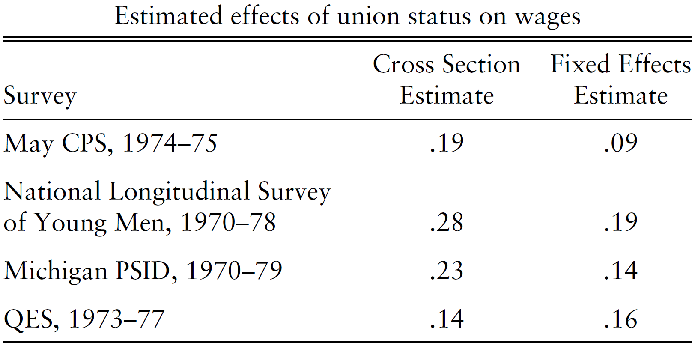
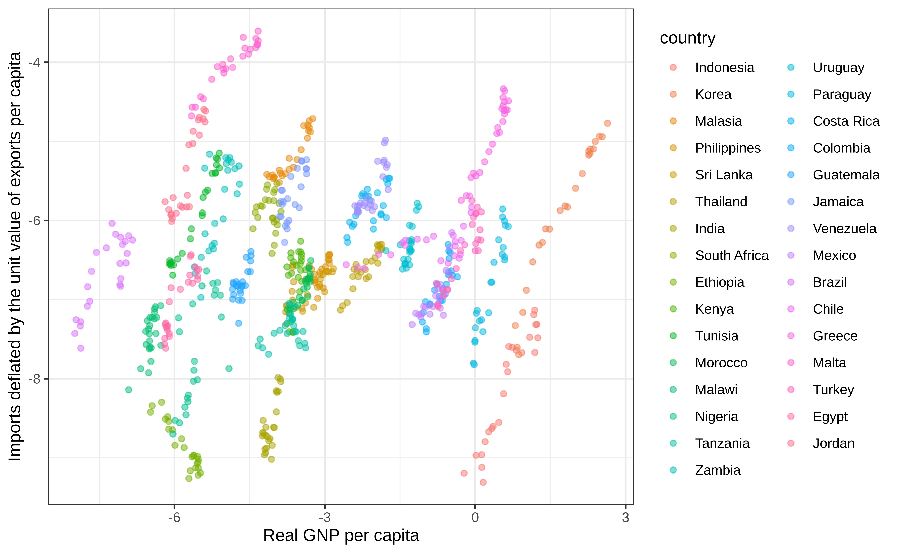
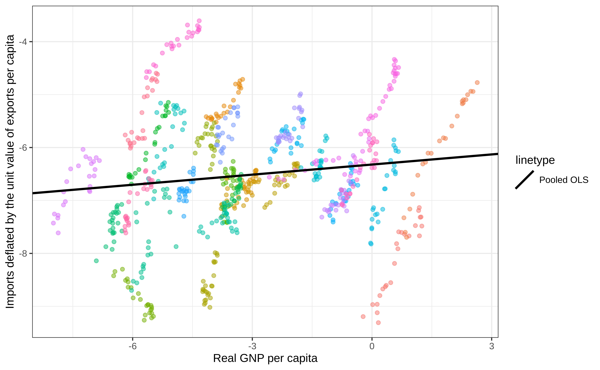
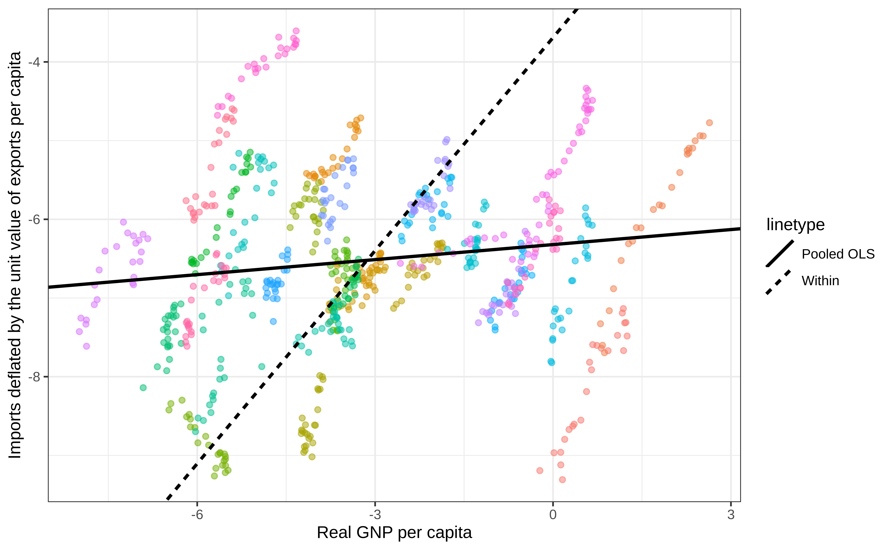
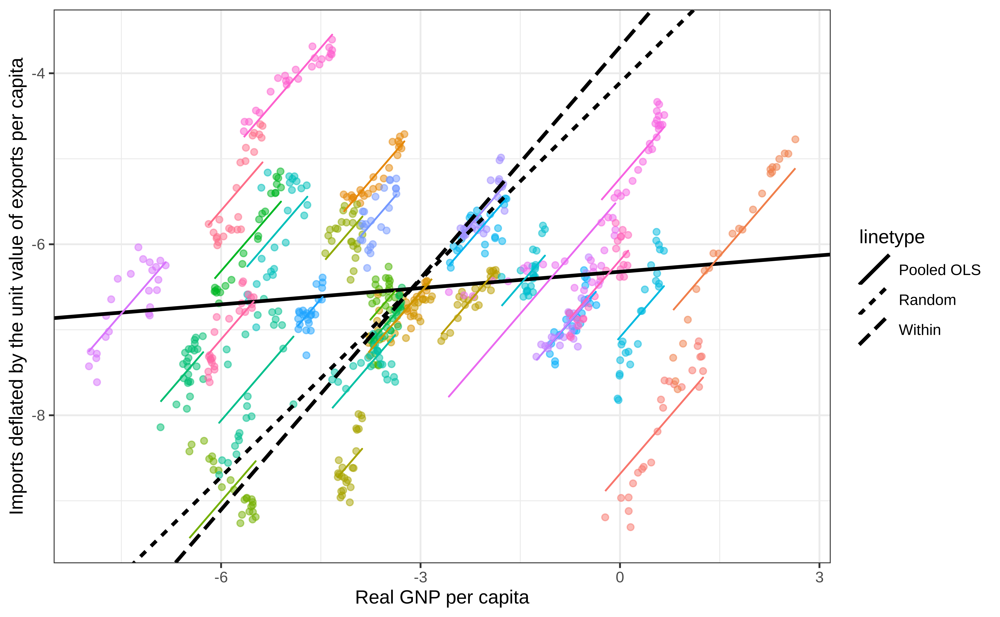
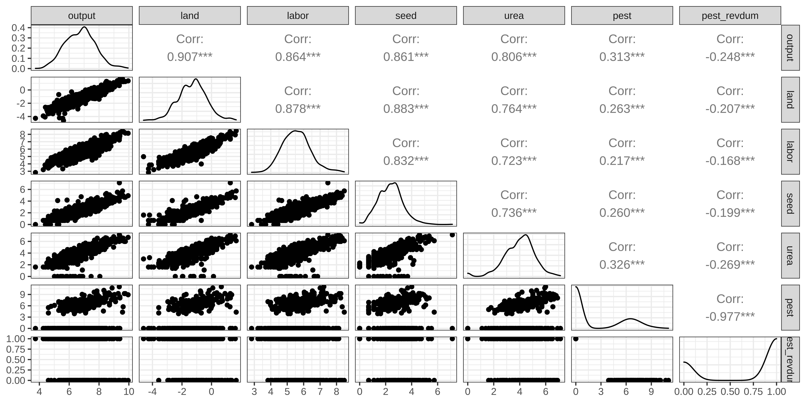

library(tidyverse) # for data wrangling
library(alr4) # for the data sets #
library(GGally)
library(parameters)
library(performance)
library(see)
library(car)
library(broom)
library(modelsummary)
library(texreg)
library(insight)
library(scales)
library(glue)
ggplot2::theme_set(ggplot2::theme_bw())
knitr::opts_chunk$set(
fig.width = 10,
fig.asp = 0.618,
fig.retina = 3,
dpi = 300,
out.width = "100%",
message = FALSE,
echo = TRUE,
cache = TRUE
)
# Custom functions to summaries data nicely
get_signif <-
function(x) {
symnum(
x,
corr = FALSE,
na = FALSE,
cutpoints = c(0, 0.001, 0.01, 0.05, 0.1, 1),
symbols = c("***", "**", "*", ".", " ")
) %>%
as.character()
}
tidy_skim <-
function(dta) {
dta %>%
select(- any_of(c("id", "time"))) %>%
skimr::skim_without_charts() %>%
as_tibble() %>%
select(any_of(c("skim_variable","n_missing")), contains("numeric")) %>%
rename_with( ~ str_remove(., "numeric\\."))
}
tidy_coeftest <-
function(
mod,
mod_name = deparse(substitute(mod)),
mod_vcov = vcov(mod),
dig = 3,
...) {
mod_name_sym <- sym(mod_name)
mod %>%
lmtest::coeftest(vcov. = mod_vcov) %>%
broom::tidy() %>%
mutate(
across(c(estimate, std.error),
~ scales::number(., 1 / 10 ^ dig, big.mark = ",")),
across(c(p.value), ~ insight::format_p(., stars_only = TRUE)),
mod_stat := glue::glue("{estimate}{p.value} ({std.error})")
) %>%
select(parameter = term, !!mod_name_sym := mod_stat)
}
tidy_gof <-
function(
mod,
mod_name = deparse(substitute(mod)),
dig = 3,
...) {
mod_sum <- summary(mod)
mod_sum <- mod_sum$fstatistic
if (is.vector(mod_sum)) {
df1 <- mod_sum[[2]]
df2 <- mod_sum[[3]]
df <- str_c(c(df1, df2), collapse = "; ")
} else {
df <- str_c(mod_sum$parameter, collapse = "; ")
}
mod %>%
broom::glance() %>%
{
dta <- .
if (!"logLik" %in% names(dta)) {
dta <-
mutate(dta, logLik = mod %>% stats::logLik() %>% as.numeric())
}
if (!"AIC" %in% names(dta)) {
dta <- mutate(dta, AIC = mod %>% stats::AIC() %>% as.numeric())
}
if (!"BIC" %in% names(dta)) {
dta <- mutate(dta, BIC = mod %>% stats::BIC() %>% as.numeric())
}
dta
} %>%
mutate(
across(any_of(c("r.squared", "deviance", "adj.r.squared")),
~ scales::number(., 1 / 10 ^ dig, big.mark = ",")),
across(any_of(c("statistic", "logLik", "AIC", "BIC")),
~ scales::number(., 1, big.mark = ",")),
`F Statistics (df)` =
glue("{statistic}{get_signif(p.value)} ", "({df})"),
nobs = scales::number(nobs, 1, big.mark = ",")
) %>%
select(
N = nobs,
`R-sq. adj.` = adj.r.squared,
`Log likelihood` = logLik,
AIC,
BIC,
`F Statistics (df)`
) %>%
pivot_longer(everything(),
names_to = "parameter",
values_to = mod_name)
}
tidy_summary <-
function(mod,
mod_name = deparse(substitute(mod)),
mod_vcov = vcov(mod),
dig = 3,
...) {
tidy_coeftest(mod,mod_name = mod_name, mod_vcov = mod_vcov, dig = dig) %>%
bind_rows(tidy_gof(mod, mod_name = mod_name, dig = dig))
}
tidy_summary_list <-
function(mod_list,
mod_vcov = NULL,
dig = 3,
...) {
# browser()
mod_list %>%
list(., names(.), seq_along(.)) %>%
pmap(~ {
vcov_here <- vcov(..1)
if (!is.null(mod_vcov[[..3]]))
vcov_here <- mod_vcov[[..3]]
tidy_summary(
mod = .x,
mod_name = .y,
mod_vcov = vcov_here,
dig = dig
)
}) %>%
reduce(full_join, by = "parameter")
}Panel Regression Analysis
MP223 - Applied Econometrics Methods for the Social Sciences
Eduard Bukin
R setup
Recap
Ceteris paribus!?
- Why multiple regression is “good”?
- What variables are important when establishing a causal effect of a treatment (key variable)?
- What if we do not have an important variable?
Selection bias = OVB! In multiple regression analysis.
- What does OVB to our regression estimates?
- Bias (inconsistency) of estimates!
Data Types
Cross-sectional data
| ID | Y | X1 | X2 |
|---|---|---|---|
| \(1\) | \(y_{1}\) | \(x^{1}_{1}\) | \(x^{2}_{1}\) |
| \(2\) | \(y_{2}\) | \(x^{1}_{2}\) | \(x^{2}_{2}\) |
| \(3\) | \(y_{3}\) | \(x^{1}_{3}\) | \(x^{2}_{3}\) |
| \(\vdots\) | \(\vdots\) | \(\vdots\) | \(\vdots\) |
| \(N\) | \(y_{N}\) | \(x^{1}_{N}\) | \(x^{1}_{N}\) |
Could be repeated multiple times, but in every repetition, there are different individuals.
Panel data
table with data, where
each individual (cohort) is represented by multiple observations from different time periods.
sometimes, nested cohorts are possible too (region, individual, time).
Panel data
| ID | Time | Y | X1 | X2 |
|---|---|---|---|---|
| \(1\) | \(1\) | \(y_{11}\) | \(x^{1}_{11}\) | \(x^{2}_{11}\) |
| \(1\) | \(2\) | \(y_{12}\) | \(x^{1}_{12}\) | \(x^{2}_{12}\) |
| \(1\) | \(3\) | \(y_{13}\) | \(x^{1}_{13}\) | \(x^{2}_{13}\) |
| \(2\) | \(2\) | \(y_{22}\) | \(x^{1}_{22}\) | \(x^{2}_{22}\) |
| \(2\) | \(3\) | \(y_{23}\) | \(x^{1}_{23}\) | \(x^{2}_{23}\) |
| \(3\) | \(1\) | \(y_{31}\) | \(x^{1}_{31}\) | \(x^{2}_{31}\) |
| \(3\) | \(2\) | \(y_{32}\) | \(x^{1}_{32}\) | \(x^{2}_{32}\) |
| \(\vdots\) | \(\vdots\) | \(\vdots\) | \(\vdots\) | \(\vdots\) |
| \(N\) | \(1\) | \(y_{N1}\) | \(x^{1}_{N1}\) | \(x^{1}_{N1}\) |
| \(N\) | \(2\) | \(y_{N2}\) | \(x^{1}_{N2}\) | \(x^{2}_{N2}\) |
Panel data: Balanced and Unbalanced
| Balanced | Unbalanced | ||||||
| \(\text{ID}\) | \(\text{Time}\) | \(Y\) | \(X\) | \(\text{ID}\) | \(\text{Time}\) | \(Y\) | \(X\) |
| 1 | 1 | \(Y_{11}\) | \(X_{11}\) | 1 | 1 | \(Y_{11}\) | \(X_{11}\) |
| 1 | 2 | \(Y_{12}\) | \(X_{12}\) | 1 | 2 | \(Y_{12}\) | \(X_{12}\) |
| 1 | 3 | \(Y_{13}\) | \(X_{13}\) | 2 | 2 | \(Y_{22}\) | \(X_{22}\) |
| 2 | 1 | \(Y_{21}\) | \(X_{21}\) | 2 | 3 | \(Y_{23}\) | \(X_{23}\) |
| 2 | 2 | \(Y_{22}\) | \(X_{22}\) | 3 | 3 | \(Y_{33}\) | \(X_{33}\) |
| 2 | 3 | \(Y_{23}\) | \(X_{23}\) | 4 | 1 | \(Y_{31}\) | \(X_{31}\) |
Using Panel Data …
Important
is a strategy to control unobserved/omitted but fixed effects using time or cohort (individual) dimensions.
Motivation for panel data regression analysis
Example 1: Effect of an employee’s union membership on wage
Does the collective bargaining (union membership) has any effect on wages?
- See the following seminal papers: (Freeman 1984; Card 1996)
\[log(\text{Wage}_{it}) = \beta_0 + \beta_1 \cdot \text{Union}_{it} + \beta_2 \cdot {X_{it}} + \beta_3 \cdot \text{Ability}_{i} + \epsilon_{it}\]
where \(i\) is the individual and \(t\) is the time dimension;
Is there an endogeneity problem?
Is there a source of endogeneity / selection bias here?
- Any ideas?
- Any ideas….
Ability:
- not observable ;
- time invariant;
- correlates with \(X\) and \(Y\);
Omitting ability causes the OVB!
Solution: use the panel data
Most of the individual-related characteristics change over time: wage. union membership, skills, experience.
- These variables will be different each time we record measurements for each individual.
Ability are time-invariant and specific to each individual;
- If we introduce dummy variables for each individual,
- we can approximate different ability levels!
Cross-sectional data and individual dummies
Can we introduce dummy variables for each individual in a cross-section?
- Any ideas?
- Why?….
NO…
- Because the number of independent variables have to be less or equal to the number of observations.
Cross-sectional example
| ID | Y | X1 | X2 | \({ID}_1\) | \({ID}_2\) | \({ID}_3\) | \({ID}_N\) |
|---|---|---|---|---|---|---|---|
| \(1\) | \(y_{1}\) | \(x^{1}_{1}\) | \(x^{2}_{1}\) | 1 | 0 | 0 | 0 |
| \(2\) | \(y_{2}\) | \(x^{1}_{2}\) | \(x^{2}_{2}\) | 0 | 1 | 0 | 0 |
| \(3\) | \(y_{3}\) | \(x^{1}_{3}\) | \(x^{2}_{3}\) | 0 | 0 | 1 | 0 |
| \(\vdots\) | \(\vdots\) | \(\vdots\) | \(\vdots\) | \(\vdots\) | \(\vdots\) | \(\vdots\) | \(\vdots\) |
| \(N\) | \(y_{N}\) | \(x^{1}_{N}\) | \(x^{1}_{N}\) | 0 | 0 | 0 | 1 |
Panel data data and individual dummies
| ID | Time | Y | X1 | X2 | \({ID}_1\) | \({ID}_2\) | \({ID}_N\) |
|---|---|---|---|---|---|---|---|
| \(1\) | \(1\) | \(y_{11}\) | \(x^{1}_{11}\) | \(x^{2}_{11}\) | 1 | 0 | 0 |
| \(1\) | \(2\) | \(y_{12}\) | \(x^{1}_{12}\) | \(x^{2}_{12}\) | 1 | 0 | 0 |
| \(1\) | \(3\) | \(y_{13}\) | \(x^{1}_{13}\) | \(x^{2}_{13}\) | 1 | 0 | 0 |
| \(2\) | \(2\) | \(y_{22}\) | \(x^{1}_{22}\) | \(x^{2}_{22}\) | 0 | 1 | 0 |
| \(2\) | \(3\) | \(y_{23}\) | \(x^{1}_{23}\) | \(x^{2}_{23}\) | 0 | 1 | 0 |
| \(\vdots\) | \(\vdots\) | \(\vdots\) | \(\vdots\) | \(\vdots\) | \(\vdots\) | \(\vdots\) | \(\vdots\) |
| \(N\) | \(1\) | \(y_{N1}\) | \(x^{1}_{N1}\) | \(x^{1}_{N1}\) | 0 | 0 | 1 |
| \(N\) | \(2\) | \(y_{N2}\) | \(x^{1}_{N2}\) | \(x^{2}_{N2}\) | 0 | 0 | 1 |
With the panel data it will work, but…
May be difficult… Any ideas why?…
Number of dummy variables is equal to the number of individuals.
- If we have 5,000 individuals, we have 5,000 regression coefficients.
- What if we have 100,000 individuals?
Having too many regressors remains unbiased, but complicates inference:
- number of degrees of freedom increases;
- adjusted \(R^2\) may shrink to zero;
Panel regression: brief theory
Readings
Terminology:
Pooled OLS (regression without any panel structure);
Fixed Effect Models:
- Least-squares dummy variable (Pooled OLS + individual dummies);
- Within-transformation
- First-difference
- Between transformation (look it up in (Croissant and Millo 2018)!)
Random Effect Model
Pooled OLS
- Union example, the short model:
. . . \[log(\text{Wage}_{it}) = \beta_0 + \beta_1 \cdot \text{Union}_{it} + \beta_2 \cdot X_{it} + \epsilon_{it}\]
- Estimates are biased because we do not observe ability, which are time-invariant (Mundlak 1961).
Least-squares dummy variable approach
- Introduce a vector of dummy variables \(\color{Red}{\delta}\)
\[log(\text{Wage}_{it}) = \beta_0 + \beta_1 \cdot \text{Union}_{it} + \beta_2 \cdot X_{it} + \\ \beta_3 \cdot \color{Red}{\delta_{i}} + \epsilon_{it}\]
- Estimates and unbiased (consistent) but inefficient.
Within transformation - Key method
\[log(\text{Wage}_{it} - \overline{\text{Wage}_{i}}) = \\ \beta_0 + \beta_1 \cdot (\text{Union}_{it} - \overline{\text{Union}_{i}}) + \\ \beta_2 \cdot (X_{it} - \overline{\text{X}_{i}}) + \beta_3 \cdot (\text{Ability}_{i} - \overline{\text{Ability}_{i}}) + \\ (\epsilon_{it} - \overline{\epsilon_{i}})\]
Any time-invariant effect will disappear from the regression because: \(\text{Ability}_{i} - \overline{\text{Ability}_{i}} = 0\)
Estimates are identical to the least-squares dummy variable, but SE are more efficient;
| ID | Time | \(Y\) | \(Y-\overline{Y}\) | \(X1\) | \(X1-\overline{X1}\) |
|---|---|---|---|---|---|
| \(1\) | \(1\) | \(y_{11}\) | \(y_{11} - \overline{y_1}\) | \(x^{1}_{11}\) | \(x^1_{11} - \overline{x^1_1}\) |
| \(1\) | \(2\) | \(y_{12}\) | \(y_{12} - \overline{y_1}\) | \(x^{1}_{12}\) | \(x^1_{12} - \overline{x^1_1}\) |
| \(1\) | \(3\) | \(y_{13}\) | \(y_{13} - \overline{y_1}\) | \(x^{1}_{13}\) | \(x^1_{13} - \overline{x^1_1}\) |
| \(2\) | \(2\) | \(y_{22}\) | \(y_{22} - \overline{y_2}\) | \(x^{1}_{22}\) | \(x^1_{22} - \overline{x^1_2}\) |
| \(2\) | \(3\) | \(y_{23}\) | \(y_{23} - \overline{y_2}\) | \(x^{1}_{23}\) | \(x^1_{23} - \overline{x^1_2}\) |
| \(\vdots\) | \(\vdots\) | \(\vdots\) | \(\vdots\) | \(\vdots\) | \(\vdots\) |
| \(N\) | \(1\) | \(y_{N1}\) | \(y_{N1} - \overline{y_N}\) | \(x^{1}_{N1}\) | \(x^1_{N1} - \overline{x^1_N}\) |
| \(N\) | \(2\) | \(y_{N2}\) | \(y_{N2} - \overline{y_N}\) | \(x^{1}_{N2}\) | \(x^1_{N2} - \overline{x^1_N}\) |
First Difference transformation
\[log(\text{Wage}_{it} - {\text{Wage}_{i,t-1}}) = \\ \beta_0 + \beta_1 \cdot (\text{Union}_{it} - {\text{Union}_{it-1}}) + \\ \beta_2 \cdot (X_{it} - {{X}_{i,t-1}}) + \\ \beta_3 \cdot (\text{Ability}_{i} - {\text{Ability}_{i,t-1}}) + (\epsilon_{it} - {\epsilon_{i,t-1}})\]
- Has similar effect as the within transformation.
- Sacrifices at least one time dimension.
- Relaxes autocorrelation assumption.
- May be not possible with unbalanced data.
Fixed effect model assumptions
Very Important:
NOT ZERO CORRELATION between effects and regressors: \(Cov(\delta_{i},{X}_{it}) \neq 0\)
Strict exogeneity: \(E[\epsilon_{is}| {X}_{it}, \delta_{i}] = 0\)
\(Cov(\epsilon_{is}, {X}_{jt}) = 0\) and \(Cov(\epsilon_{it}, {X}_{it}) = 0\) , where \(j\neq i\) and \(s\neq t\) ;
Residuals (\(\epsilon\)) do not correlate with all explanatory variable (\(X\)) in all time periods (\(t\)) and for all individuals (\(i\)).
- No autocorrelation/serial correlation: \(Cov(\epsilon_{it}, {X}_{i,t-1}) = 0\);
- No cross-sectional dependence: \(Cov(\epsilon_{it}, {X}_{j,t}) = 0\) (when individual observations react similarly to the common shocks or correlate in space);
Not less important:
- Linearity
- Homoscedasticity of error terms: \(Var(\delta_{i}|{X}_{it}) = \sigma^2_{\delta}\)
Fixed effect: literature
- Seminal papers: Mundlak (1961)
- Climate and agriculture: Mendelsohn, Nordhaus, and Shaw (1994), Blanc and Schlenker (2017), Bozzola et al. (2017)
- Choice of irrigation: Kurukulasuriya, Kala, and Mendelsohn (2011), Chatzopoulos and Lippert (2015)
- Crop choice: Kurukulasuriya et al. (2008), Seo and Mendelsohn (2008a),
- Livestock choice Seo et al. (2008), Seo and Mendelsohn (2008b)
- Cross-sectional dependence: Conley (1999)
Random Effect Model
- Introduce a random component of the error term \(\color{Red}{v}\)
\[log(\text{Wage}_{it}) = \beta_0 + \beta_1 \cdot \text{Union}_{it} + \beta_2 \cdot X_{it} + \beta_3 \cdot \color{Red}{v_{i}} + \epsilon_{it}\]
Difference from the fixed effect model:
Assumes NO CORRELATION (ZERO CORRELATION) between effects and regressors: \(Cov(v_{i},{X}_{it}) = 0\).
Ignoring RE causes no bias to the estimates;
Limitations of Fixed and Random effect models
NOT the ultimate solution to Endogeneity.
There might still be some OVB even with the fixed effects.
- Instrumental Variables are possible within the panel regression context too.
Measurement error may cause endogeneity;
Example 1. Unions premium: implication of the Fixed effect model:
Source: Angrist and Pischke (2009)
Panel regression: Empirical motivation
Example 2. Macro-level data analysis
- Let us analyze a link between imports and national product based on (Kinal and Lahiri 1993).
- Both variables are in per capita and in log.
library(plm); library(pder); library(splm)
data("ForeignTrade", package = "pder")
ForeignTrade <- ForeignTrade %>%
select(country, year, exports, imports, gnp) %>%
pdata.frame(index = c("country", "year"))
pdim(ForeignTrade)Balanced Panel: n = 31, T = 24, N = 744 country year exports imports gnp
Indonesia-1963 Indonesia 1963 -7.62723 -9.19358 -0.22242
Indonesia-1964 Indonesia 1964 -7.61279 -8.96084 0.12960
Indonesia-1965 Indonesia 1965 -7.65318 -8.96664 0.01653
Indonesia-1966 Indonesia 1966 -7.67038 -9.30862 0.15908
Indonesia-1967 Indonesia 1967 -7.67121 -9.12042 0.13064
Indonesia-1968 Indonesia 1968 -7.42591 -8.79655 0.19652Relationship between GNP and imports
Pooled
Pooled
Pooled + Within
Pooled + Within + Random
Panel regression: Empirical practice
General algorithm
Pooled OLS using;
- Gauss-Markov assumption validation: Linearity, Collinearity, No endogeneity, Homoscedasticity, validation;
FE: Fixed Effect. Within-transformation. Individual, Time or Two-ways effects;
F-testandLM teston FE consistency against pooled;
RE: Random Effect;
Hausman test,Chamberlain test,Angrist and Neweyon effects’ correlation with regressors of RE consistency against the FE;
Choosing the appropriate functional form;
Serial correlation and cross-sectional dependence tests;
Robust standard errors:
- Clustered SE and/or heteroscedasticity and/or autocorrelation robust SE;
Summary and interpretation;
Example 3. Micro-level application RiceFarms
- Let us explore the determinants of rice farms productivity.
Tip
We want to understand if larger farms are more productive compared to smaller once.
Farm-specific Rice production function (1)
- We employ a production function approach, relying on the Cobb-Douglas Production function:
\[\ln y = \ln \beta_0 + \sum_{n = 1}^{N} \beta_n \ln x_n + \sum_{k = 1}^{K} \gamma_k \delta_k + \epsilon\]
where,
- \(y\) is the output and \(x_n\) are the inputs all in physical mass (or monetary value); \(N\) is the number of independent variables;
- \(\delta_k\) are the shift parameters of additional dummy variables;
- \(\beta_0\) , \(\beta_n\) , \(\gamma_n\) are the estimated coefficients;
Farm-specific Rice production function (2)
- Inputs are: land, seeds, urea, pesticide and labor;
- Output: rice production in physical mass;
- short model (all things are in log): . . .
\[\text{output} = A_0 + \beta_1 \cdot \text{land} + \beta_2 \cdot \text{labor} + \\ \beta_3 \cdot \text{seed} + \beta_4 \cdot \text{urea} + \beta_1 \cdot \text{pesticide}\]
What are the ex-ante expectations about the regression coefficients?
- Ideas? …
What about OVB? (3)
What omitted variables could cause bias of the regression?
- Any!? …
- Any!? …
- Capital, Ability, Climate, Geography…
Let us speculate on the bias of land estimated given exclusion of ability.
- Long model.
- Short model.
- OVB formula.
Educated guess about bias of the estimates.
Farm-level data
Following data
RiceFarmsis used from packagesplm. We only use a subset of variables:output- gross output of rice in kgland- the total area cultivated with rice, measured in hectaresseed- seed in kilogramurea- urea in kilogrampesticide- urea in kilogramlabor- total labor (excluding harvest labor)
We calculate logs of all variables.
we do not use logs for summary statistics.
Data glimpse (1)
data("RiceFarms", package = "splm")
rice_dta_selection <- RiceFarms %>% as_tibble() %>%
select(
id, time,
output = goutput,
land = size,
labor = totlabor,
seed, urea,
pest = pesticide
)
rice_dta_1 <- rice_dta_selection %>%
mutate(across(c(output, land, seed, urea, pest, labor), ~ log(.)))
# Making panel structure
rice_dta_p1 <- rice_dta_1 %>% pdata.frame(index = c("id", "time"))
pdim(rice_dta_p1)Balanced Panel: n = 171, T = 6, N = 1026Data glimpse (2)
Rows: 1,026
Columns: 8
$ id <int> 101001, 101001, 101001, 101001, 101001, 101001, 101017, 101017,…
$ time <dbl> 1, 2, 3, 4, 5, 6, 1, 2, 3, 4, 5, 6, 1, 2, 3, 4, 5, 6, 1, 2, 3, …
$ output <dbl> 8.984694, 8.314587, 7.882315, 8.411833, 9.698920, 9.765604, 8.2…
$ land <dbl> 1.0986123, 0.6931472, 0.0000000, 0.6931472, 1.2731257, 1.273125…
$ labor <dbl> 7.977625, 7.675546, 6.980076, 7.645398, 8.265907, 8.165932, 6.6…
$ seed <dbl> 4.499810, 3.688879, 4.605170, 4.094345, 4.653960, 4.653960, 3.9…
$ urea <dbl> 6.802395, 6.396930, 6.551080, 6.396930, 5.991465, 5.991465, 4.7…
$ pest <dbl> 8.699515, 8.006368, 8.517193, 8.517193, 9.230143, 9.230143, -In…# A tibble: 6 × 9
skim_variable n_missing mean sd p0 p25 p50 p75 p100
<chr> <int> <dbl> <dbl> <dbl> <dbl> <dbl> <dbl> <dbl>
1 output 0 6.73 0.995 3.74 6.04 6.79 7.38 9.95
2 land 0 -1.30 0.951 -4.61 -1.94 -1.25 -0.693 1.67
3 labor 0 5.56 0.847 2.83 4.97 5.53 6.08 8.47
4 seed 0 2.37 0.937 0 1.61 2.30 3.00 7.13
5 urea 0 3.98 1.16 0 3.22 4.09 4.61 7.13
6 pest 0 -Inf NaN -Inf -Inf -Inf 5.58 11.0 - Any problems with data?
Any problems with data? (1)
Any? …
pest, when transformed with logs, produces-Infvalues.- Why is that so?
- Any? …
- Because there are zero values of pesticides application \(\ln 0 = - \infty\).
-Infinity in logs: lazy solution
- Before log transformation, substitute any zero with a small value, for example
0.0001;
rice_dta_lazy <-
rice_dta_selection %>%
mutate(pest = ifelse(pest <= 0, 0.0001, pest))%>%
mutate(across(c(output, land, seed, urea, pest, labor), ~ log(.)))
rice_dta_p_lazy <- rice_dta_lazy %>% pdata.frame(index = c("id", "time"))
rice_dta_lazy %>% tidy_skim()# A tibble: 6 × 9
skim_variable n_missing mean sd p0 p25 p50 p75 p100
<chr> <int> <dbl> <dbl> <dbl> <dbl> <dbl> <dbl> <dbl>
1 output 0 6.73 0.995 3.74 6.04 6.79 7.38 9.95
2 land 0 -1.30 0.951 -4.61 -1.94 -1.25 -0.693 1.67
3 labor 0 5.56 0.847 2.83 4.97 5.53 6.08 8.47
4 seed 0 2.37 0.937 0 1.61 2.30 3.00 7.13
5 urea 0 3.98 1.16 0 3.22 4.09 4.61 7.13
6 pest 0 -4.37 7.35 -9.21 -9.21 -9.21 5.58 11.0 -Infinity in logs: smart solution
- Introduce reverse dummy variables for each variable with log of zero, see: Battese (1997);
- Substitute negative infinity with zero.
rice_dta <-
rice_dta_selection %>%
mutate(pest_revdum = ifelse(pest <= 0, 1, 0),
across(c(output, land, seed, urea, pest, labor), ~ log(.)),
pest = ifelse(is.infinite(pest), 0, pest))
rice_dta_p <- rice_dta %>% pdata.frame(index = c("id", "time"))
rice_dta %>% tidy_skim()# A tibble: 7 × 9
skim_variable n_missing mean sd p0 p25 p50 p75 p100
<chr> <int> <dbl> <dbl> <dbl> <dbl> <dbl> <dbl> <dbl>
1 output 0 6.73 0.995 3.74 6.04 6.79 7.38 9.95
2 land 0 -1.30 0.951 -4.61 -1.94 -1.25 -0.693 1.67
3 labor 0 5.56 0.847 2.83 4.97 5.53 6.08 8.47
4 seed 0 2.37 0.937 0 1.61 2.30 3.00 7.13
5 urea 0 3.98 1.16 0 3.22 4.09 4.61 7.13
6 pest 0 2.04 3.15 0 0 0 5.58 11.0
7 pest_revdum 0 0.695 0.461 0 0 1 1 1 Data exploration
Step 1.1 Pooled OLS
rice_pooled <-
plm(output ~ land + labor + seed + urea + pest + pest_revdum,
rice_dta_p, model = "pooling")
rice_pooled_2 <-
lm(output ~ land + labor + seed + urea + pest + pest_revdum, rice_dta_p)
tidy_summary_list(list(pooled_plm = rice_pooled, pooled_lm = rice_pooled_2))# A tibble: 13 × 3
parameter pooled_plm pooled_lm
<chr> <glue> <glue>
1 (Intercept) 4.314*** (0.219) 4.314*** (0.219)
2 land 0.435*** (0.030) 0.435*** (0.030)
3 labor 0.253*** (0.028) 0.253*** (0.028)
4 seed 0.148*** (0.026) 0.148*** (0.026)
5 urea 0.171*** (0.016) 0.171*** (0.016)
6 pest 0.091*** (0.017) 0.091*** (0.017)
7 pest_revdum 0.513*** (0.117) 0.513*** (0.117)
8 N 1,026 1,026
9 R-sq. adj. 0.875 0.875
10 Log likelihood -379 -379
11 AIC 775 775
12 BIC 814 814
13 F Statistics (df) 1,198*** (6; 1019) 1,198*** (6) Step 1.2 Linearity and homoscedasticity

Step 2.1 Fixed Effect
rice_fe <-
plm(output ~ land + labor + seed + urea + pest + pest_revdum,
rice_dta_p, model = "within", effect = "individual")
tidy_summary_list(list(pooled = rice_pooled, FE = rice_fe))# A tibble: 13 × 3
parameter pooled FE
<chr> <glue> <glue>
1 (Intercept) 4.314*** (0.219) <NA>
2 land 0.435*** (0.030) 0.420*** (0.036)
3 labor 0.253*** (0.028) 0.271*** (0.033)
4 seed 0.148*** (0.026) 0.124*** (0.030)
5 urea 0.171*** (0.016) 0.163*** (0.019)
6 pest 0.091*** (0.017) 0.110*** (0.020)
7 pest_revdum 0.513*** (0.117) 0.635*** (0.135)
8 N 1,026 1,026
9 R-sq. adj. 0.875 0.676
10 Log likelihood -379 -245
11 AIC 775 504
12 BIC 814 538
13 F Statistics (df) 1,198*** (6; 1019) 386*** (6; 849) Step 2.1 lazy versus reverse dummy
Code
rice_fe_lazy <-
plm(output ~ land + labor + seed + urea + pest,
rice_dta_p_lazy, model = "within", effect = "individual")
rice_pooled_lazy <-
plm(output ~ land + labor + seed + urea + pest,
rice_dta_p_lazy, model = "pooling")
list(pooled = rice_pooled, `pooled (lazy)` = rice_pooled_lazy, `FE (rev. dumy)` = rice_fe, `FE (lazy)` = rice_fe_lazy) %>%
tidy_summary_list()# A tibble: 13 × 5
parameter pooled `pooled (lazy)` `FE (rev. dumy)` `FE (lazy)`
<chr> <glue> <glue> <glue> <glue>
1 (Intercept) 4.314*** (0.2… 4.853*** (0.19… <NA> <NA>
2 land 0.435*** (0.0… 0.436*** (0.03… 0.420*** (0.036) 0.421*** (…
3 labor 0.253*** (0.0… 0.247*** (0.02… 0.271*** (0.033) 0.264*** (…
4 seed 0.148*** (0.0… 0.164*** (0.02… 0.124*** (0.030) 0.134*** (…
5 urea 0.171*** (0.0… 0.179*** (0.01… 0.163*** (0.019) 0.174*** (…
6 pest 0.091*** (0.0… 0.006*** (0.00… 0.110*** (0.020) 0.008*** (…
7 pest_revdum 0.513*** (0.1… <NA> 0.635*** (0.135) <NA>
8 N 1,026 1,026 1,026 1,026
9 R-sq. adj. 0.875 0.872 0.676 0.666
10 Log likelihood -379 -391 -245 -261
11 AIC 761 785 492 525
12 BIC 766 790 497 529
13 F Statistics (df) 1,198*** (6; … 1,402*** (5; 1… 386*** (6; 849) 444*** (5;…Step 2.2 F test for individual effects
Compares FE model to OLS. OLS is always consistent, when Gauss-Markov assumptions are satisfied.
- H0: One model is inconsistent.
- H1: Both models are equally consistent.
Step 2.3 Lagrange Multiplier Tests
Compares FE model to OLS. OLS is always consistent, when Gauss-Markov assumptions are satisfied.
- H0: One model is inconsistent.
- H1: Both models are equally consistent.
Lagrange Multiplier Test - (Honda) for balanced panels
data: output ~ land + labor + seed + urea + pest + pest_revdum
normal = 3.7129, p-value = 0.0001025
alternative hypothesis: significant effects
Lagrange Multiplier Test - (Breusch-Pagan) for balanced panels
data: output ~ land + labor + seed + urea + pest + pest_revdum
chisq = 13.785, df = 1, p-value = 0.0002049
alternative hypothesis: significant effectsStep 3.1 Random Effect
rice_re <-
plm(output ~ land + labor + seed + urea + pest + pest_revdum,
rice_dta_p, model = "random", effect = "individual")
list(pooled = rice_pooled, FE = rice_fe, RE = rice_re) %>%
tidy_summary_list()# A tibble: 13 × 4
parameter pooled FE RE
<chr> <glue> <glue> <glue>
1 (Intercept) 4.314*** (0.219) <NA> 4.277*** (0.222)
2 land 0.435*** (0.030) 0.420*** (0.036) 0.434*** (0.031)
3 labor 0.253*** (0.028) 0.271*** (0.033) 0.258*** (0.029)
4 seed 0.148*** (0.026) 0.124*** (0.030) 0.143*** (0.027)
5 urea 0.171*** (0.016) 0.163*** (0.019) 0.169*** (0.016)
6 pest 0.091*** (0.017) 0.110*** (0.020) 0.097*** (0.018)
7 pest_revdum 0.513*** (0.117) 0.635*** (0.135) 0.547*** (0.118)
8 N 1,026 1,026 1,026
9 R-sq. adj. 0.875 0.676 0.853
10 Log likelihood -379 -245 -339
11 AIC 761 492 680
12 BIC 766 497 685
13 F Statistics (df) 1,198*** (6; 1019) 386*** (6; 849) 5,967*** (6) Step 3.2 Hausman Test for Panel Models
Compares RE to FE model. FE is assumed to be consistent
- H0: One model is inconsistent.
- H1: Both models are equally consistent.
Step 4.1 Serial correlation and cross-sectional dependence
Wooldridge’s test for unobserved individual effects
- H0: no unobserved effects
- H1: some effects also dues to serial correlation
Step 4.2 lm tests for random effects and/or serial correlation
- H0: serial correlation is zero
- H1: some serial correlation
Bera, Sosa-Escudero and Yoon locally robust test - balanced panel
data: formula
chisq = 20.988, df = 1, p-value = 4.622e-06
alternative hypothesis: AR(1) errors sub random effects
Bera, Sosa-Escudero and Yoon locally robust test (one-sided) - balanced
panel
data: formula
z = 0.38656, p-value = 0.3495
alternative hypothesis: random effects sub AR(1) errorsStep 4.3 Breusch-Godfrey and Durbin-Watson tests
- H0: serial correlation is zero
- H0: some serial correlation
Breusch-Godfrey/Wooldridge test for serial correlation in panel models
data: output ~ land + labor + seed + urea + pest + pest_revdum
chisq = 312.08, df = 6, p-value < 2.2e-16
alternative hypothesis: serial correlation in idiosyncratic errors
Breusch-Godfrey/Wooldridge test for serial correlation in panel models
data: output ~ land + labor + seed + urea + pest + pest_revdum
chisq = 57.029, df = 2, p-value = 4.133e-13
alternative hypothesis: serial correlation in idiosyncratic errors
Durbin-Watson test for serial correlation in panel models
data: output ~ land + labor + seed + urea + pest + pest_revdum
DW = 2.0627, p-value = 0.8511
alternative hypothesis: serial correlation in idiosyncratic errorsStep 5. Robust and clustered standard errors (1)
library(lmtest); library(car); library(sandwich); options(digits = 4, scipen = 15)
# Regular SE
vcov(rice_fe) land labor seed urea pest
land 0.001307260 -0.00059769 -0.00041874 -0.00014361 -0.000006703
labor -0.000597690 0.00110633 -0.00024768 -0.00007864 0.000030847
seed -0.000418745 -0.00024768 0.00093011 -0.00012979 -0.000041049
urea -0.000143612 -0.00007864 -0.00012979 0.00037163 -0.000047684
pest -0.000006703 0.00003085 -0.00004105 -0.00004768 0.000383951
pest_revdum -0.000010199 0.00013112 -0.00025183 -0.00023079 0.002579932
pest_revdum
land -0.0000102
labor 0.0001311
seed -0.0002518
urea -0.0002308
pest 0.0025799
pest_revdum 0.0183242# Clustered, heteroscedasticity and autocorrelation robust SE
vcovHC(rice_fe, method = "arellano", type = "HC0", cluster = "group") land labor seed urea pest
land 0.0022017 -0.00090745 -0.00058997 -0.00034714 0.00011641
labor -0.0009074 0.00117256 -0.00011760 0.00001305 -0.00002128
seed -0.0005900 -0.00011760 0.00131948 -0.00040185 -0.00001704
urea -0.0003471 0.00001305 -0.00040185 0.00065293 -0.00009713
pest 0.0001164 -0.00002128 -0.00001704 -0.00009713 0.00033325
pest_revdum 0.0008926 -0.00018949 -0.00015076 -0.00065111 0.00226554
pest_revdum
land 0.0008926
labor -0.0001895
seed -0.0001508
urea -0.0006511
pest 0.0022655
pest_revdum 0.0162579
attr(,"cluster")
[1] "group"Step 5. Robust and clustered standard errors (2)
t test of coefficients:
Estimate Std. Error t value Pr(>|t|)
land 0.4198 0.0469 8.95 < 0.0000000000000002 ***
labor 0.2708 0.0342 7.91 0.000000000000008 ***
seed 0.1238 0.0363 3.41 0.00068 ***
urea 0.1629 0.0256 6.38 0.000000000299222 ***
pest 0.1103 0.0183 6.04 0.000000002278921 ***
pest_revdum 0.6350 0.1275 4.98 0.000000770311250 ***
---
Signif. codes: 0 '***' 0.001 '**' 0.01 '*' 0.05 '.' 0.1 ' ' 1Step 5. Robust and clustered standard errors (2)
Code
# A tibble: 12 × 4
parameter `FE regular SE` `FE cl. het. robust` `FE cl. het. autoco…`
<chr> <glue> <glue> <glue>
1 land 0.420*** (0.036) 0.420*** (0.040) 0.420*** (0.047)
2 labor 0.271*** (0.033) 0.271*** (0.032) 0.271*** (0.034)
3 seed 0.124*** (0.030) 0.124*** (0.029) 0.124*** (0.037)
4 urea 0.163*** (0.019) 0.163*** (0.021) 0.163*** (0.026)
5 pest 0.110*** (0.020) 0.110*** (0.017) 0.110*** (0.018)
6 pest_revdum 0.635*** (0.135) 0.635*** (0.117) 0.635*** (0.128)
7 N 1,026 1,026 1,026
8 R-sq. adj. 0.676 0.676 0.676
9 Log likelihood -245 -245 -245
10 AIC 504 504 504
11 BIC 538 538 538
12 F Statistics (df) 386*** (6; 849) 386*** (6; 849) 386*** (6; 849) Are larger farms more productive?
Tip
Remember:
We want to understand if larger farms are more productive compared to smaller once.
- It is possible to understand by performing a hypothesis testing about a linear combination of parameters taking into consideration their covariance.
Linear hypothesis (1)
lh_1 <-
linearHypothesis(rice_fe,
"land + labor + seed + urea + pest = 1",
vcov. = vcovHC(rice_fe))
lh_1Linear hypothesis test
Hypothesis:
land + labor + seed + urea + pest = 1
Model 1: restricted model
Model 2: rice_fe
Note: Coefficient covariance matrix supplied.
Res.Df Df Chisq Pr(>Chisq)
1 850
2 849 1 8.18 0.0042 **
---
Signif. codes: 0 '***' 0.001 '**' 0.01 '*' 0.05 '.' 0.1 ' ' 1[1] 0.08768[1] 0.0009399Linear hypothesis: delta method (2)
Class/Homework
Reproduce example 3 from the class
Instead of using a Cobb-Douglas production function, use the Translog production function.
Reduce number of regressors to land, labor and seeds for simplicity.
Compute the marginal effects of coefficients.
. . . \[\ln y = \beta_0 + \sum_{n = 1}^{N} \beta_n \ln x_n + \\ \frac{1}{2} \sum_{n = 1}^{N} \sum_{m = 1}^{M} \beta_{nm} \ln x_n \ln x_m + \sum_{k = 1}^{K} \gamma_k \delta_k + \epsilon\]
where,
- \(\ln x_n \ln x_m\) are the interaction terms between all combination of two regressors.
- Everything else is the same as in Cobb-Douglas.
Take away
Take away
Data types: cross-sectional and panel balanced and unbalanced
Why panel data:
FE vs RE;
- Correlated and uncorrelated individual effects
- Limitations of the panel regression methods
- Within, first difference, Random effect
Practical application;
- Fitting panel regression
- Cobb-Douglas and Translog production function
- Model selection routine
- Statistical testing
- Standard Errors correction
- Results presentation
Linear hypothesis testing
- Linear combination of parameters
- Delta method
References
Angrist, Joshua D., and Jörn-Steffen Pischke. 2009. Mostly Harmless Econometrics. Princeton University Press. https://doi.org/10.1515/9781400829828.
Battese, George E. 1997. “A Note on the Estimation of Cobb-Douglas Production Functions When Some Explanatory Variables Have Zero Values.” Journal of Agricultural Economics 48 (1-3): 250–52. https://doi.org/10.1111/j.1477-9552.1997.tb01149.x.
Blanc, Elodie, and Wolfram Schlenker. 2017. “The Use of Panel Models in Assessments of Climate Impacts on Agriculture.” Review of Environmental Economics and Policy 11 (2): 258–79. https://doi.org/10.1093/reep/rex016.
Bozzola, Martina, Emanuele Massetti, Robert Mendelsohn, and Fabian Capitanio. 2017. “A Ricardian Analysis of the Impact of Climate Change on Italian Agriculture.” European Review of Agricultural Economics 45 (1): 57–79. https://doi.org/10.1093/erae/jbx023.
Card, David. 1996. “The Effect of Unions on the Structure of Wages: A Longitudinal Analysis.” Econometrica 64 (4): 957. https://doi.org/10.2307/2171852.
Chatzopoulos, Thomas, and Christian Lippert. 2015. “Endogenous Farm-Type Selection, Endogenous Irrigation, and Spatial Effects in Ricardian Models of Climate Change.” European Review of Agricultural Economics 43 (2): 217–35. https://doi.org/10.1093/erae/jbv014.
Conley, T. G. 1999. “GMM Estimation with Cross Sectional Dependence.” Journal of Econometrics 92 (1): 1–45. https://doi.org/10.1016/s0304-4076(98)00084-0.
Croissant, Yves, and Giovanni Millo. 2018. Panel Data Econometrics with r. John Wiley & Sons.
Freeman, Richard B. 1984. “Longitudinal Analyses of the Effects of Trade Unions.” Journal of Labor Economics 2 (1): 1–26. https://doi.org/10.1086/298021.
Kinal, T., and K. Lahiri. 1993. “On the Estimation of Simultaneous-Equations Error-Components Models with an Application to a Model of Developing Country Foreign Trade.” Journal of Applied Econometrics 8 (1): 81–92. https://doi.org/10.1002/jae.3950080107.
Kurukulasuriya, Pradeep, Namrata Kala, and Robert Mendelsohn. 2011. “Adaptation and Climate Change Impacts: A Structural Ricardian Model of Irrigation and Farm Income in Africa.” Climate Change Economics 2 (02): 149–74.
Kurukulasuriya, Pradeep, Robert Mendelsohn, Pradeep Kurukulasuriya, and Robert Mendelsohn. 2008. “Crop Switching as a Strategy for Adapting to Climate Change.” https://doi.org/10.22004/AG.ECON.56970.
Mendelsohn, Robert, William D Nordhaus, and Daigee Shaw. 1994. “The Impact of Global Warming on Agriculture: A Ricardian Analysis.” The American Economic Review, 753–71.
Mundlak, Yair. 1961. “Empirical Production Function Free of Management Bias.” Journal of Farm Economics 43 (1): 44. https://doi.org/10.2307/1235460.
Seo, S. Niggol, and Robert Mendelsohn. 2008a. “Measuring Impacts and Adaptations to Climate Change: A Structural Ricardian Model of African Livestock Management.” Agricultural Economics 38 (2): 151–65. https://doi.org/10.1111/j.1574-0862.2008.00289.x.
———. 2008b. “An Analysis of Crop Choice: Adapting to Climate Change in South American Farms.” Ecological Economics 67 (1): 109–16. https://doi.org/10.1016/j.ecolecon.2007.12.007.
Seo, S. Niggol, Robert Mendelsohn, S. Niggol Seo, and Robert Mendelsohn. 2008. “Animal Husbandry in Africa: Climate Change Impacts and Adaptations.” https://doi.org/10.22004/AG.ECON.56968.
Söderbom, Måns, Francis Teal, and Markus Eberhardt. 2014. Empirical Development Economics. ROUTLEDGE. https://www.ebook.de/de/product/21466458/mans_soederbom_francis_teal_markus_eberhardt_empirical_development_economics.html.
Wooldridge, Jeffrey M. 2010. Econometric Analysis of Cross Section and Panel Data. MIT press.
Wooldridge, Jeffrey Marc. 2020. Introductory Econometrics: A Modern Approach. South-Western. https://www.cengage.uk/shop/isbn/9781337558860.